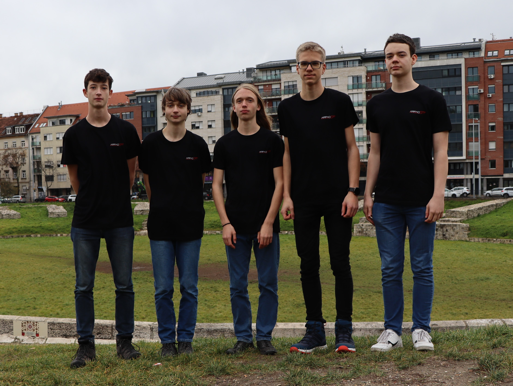
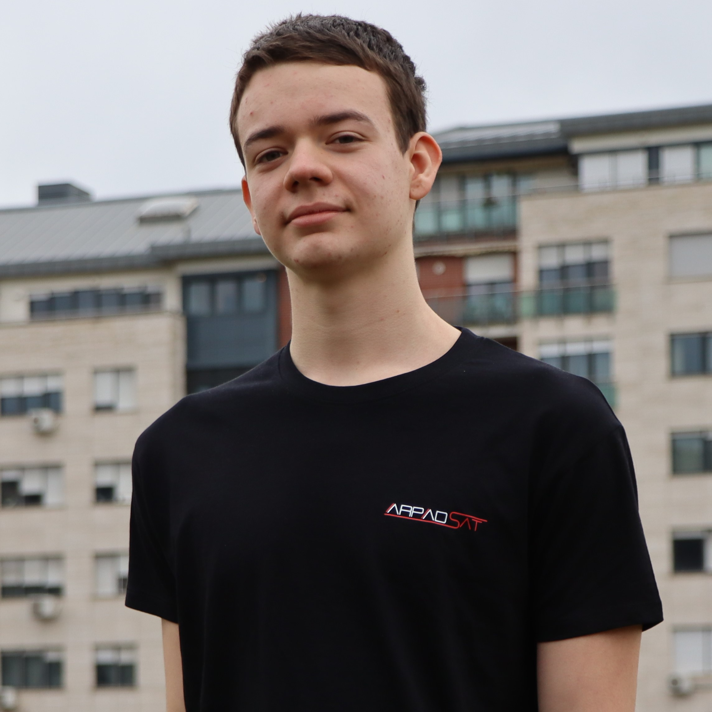
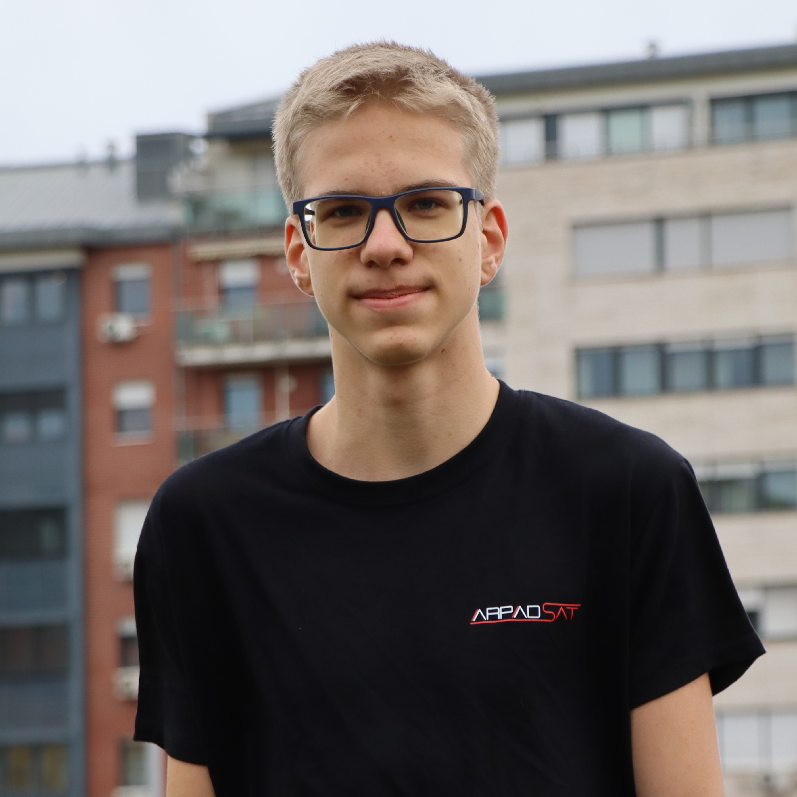
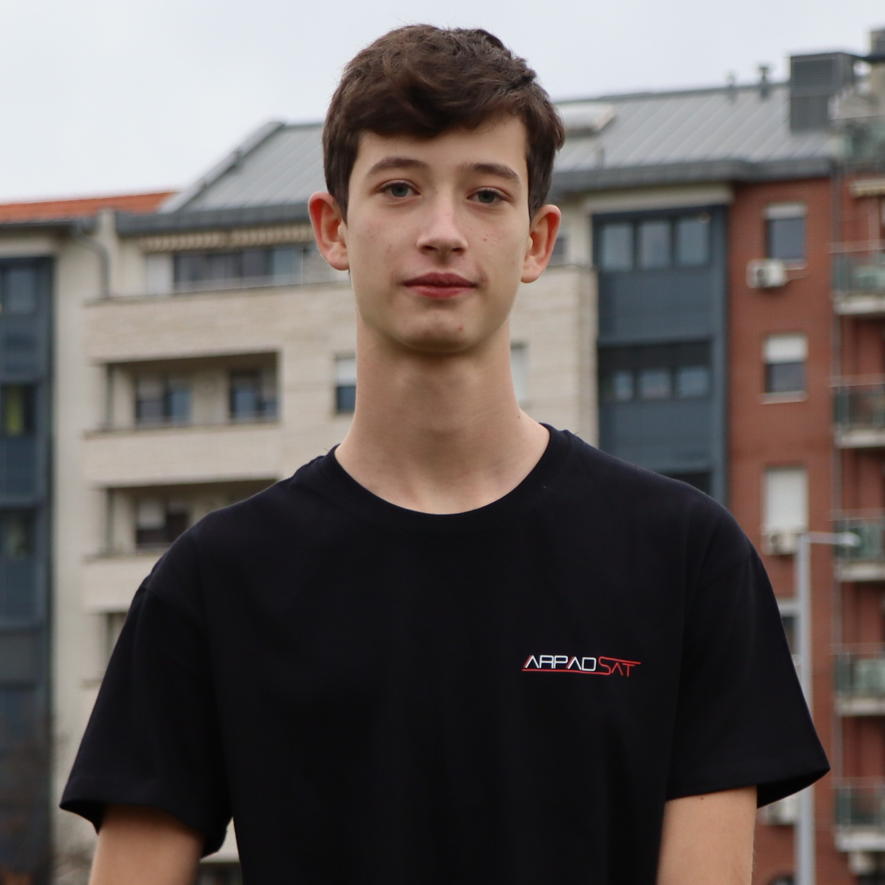
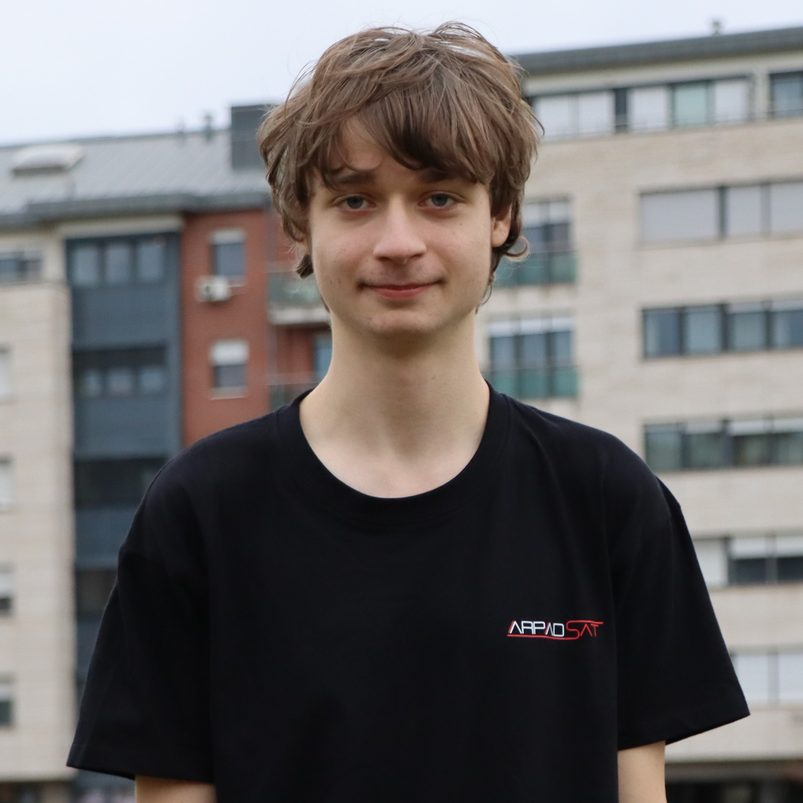
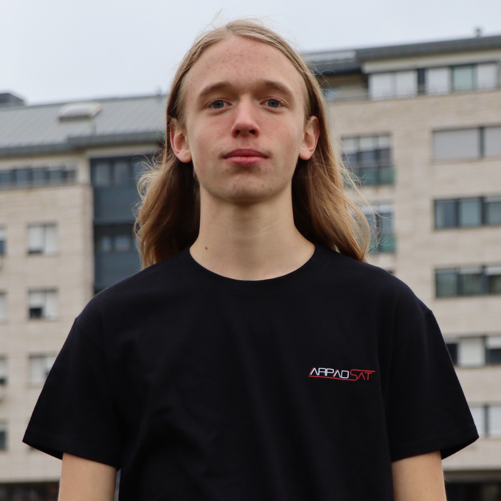

<!DOCTYPE html>
<html lang="hu"></html>
<html>
    <background></background>
    <head>
        <title>ÁrpádSat - RÓLUNK</title>
        <meta charset="UTF-8">
        <meta name="viewport" content="width=device-width, initial-scale=0.8">
        <link rel="stylesheet" href="style.css">
        <link rel="shortcut icon" type="image/x-icon" href="Cansat_key_visual_pillars.ico">
    </head>
    <body>
        <svg xmlns="http://www.w3.org/2000/svg" style="display: none;">
            <filter id="blur-filter">
              <feGaussianBlur in="SourceGraphic" stdDeviation="5" />
            </filter>
          </svg>
        <header class="header">
            
            <nav class="navigation">
                <a href="index.html" class="navigation2 navelem2"><ion-icon name="home"></ion-icon>Home</a>
                <a href="about.html" class="navigation2 navelem2"><ion-icon name="card"></ion-icon>Rólunk</a>
                <a href="docs.html" class="navigation2 navelem2"><ion-icon name="list"></ion-icon>Dokumentációink</a>
                <a href="second.html" class="navigation2 navelem2"><ion-icon name="barbell"></ion-icon>Másodlagos küldetésünk</a>
                <a href="news.html" class="navigation2 navelem2"><ion-icon name="checkmark-done"></ion-icon>Blog</a>
                <a href="calendar.html" class="navigation2 navelem2"><ion-icon name="calendar-number"></ion-icon>Ütemtervünk</a>
<!--                <a href="../index.html"><button class="languageen navigation2 navelem2">EN</button></a>
                <button class="languagehu navigation2 navelem2">HU</button>-->
            </nav>
            <button class="checkresp restat" onclick="respat()"><ion-icon name="menu"></ion-icon></button>
            <button class="checkresp restat2" onclick="respat2()"><ion-icon name="close"></ion-icon></button>
        </header>
        <header2 class="header2">
            <nav class="navigation">
                <h3 class="navetext navelem">Navigációs menü</h3>
                <a href="index.html" class="navigation2 navelem"><ion-icon name="home"></ion-icon>Home</a>
                <a href="about.html" class="navigation2 navelem"><ion-icon name="card"></ion-icon>Rólunk</a>
                <a href="docs.html" class="navigation2 navelem"><ion-icon name="list"></ion-icon>Dokumentációink</a>
                <a href="second.html" class="navigation2 navelem"><ion-icon name="barbell"></ion-icon>Másodlagos küldetésünk</a>
                <a href="news.html" class="navigation2 navelem"><ion-icon name="checkmark-done"></ion-icon>Blog</a>
                <a href="calendar.html" class="navigation2 navelem"><ion-icon name="calendar-number"></ion-icon>Ütemtervünk</a>
            </nav>
<!--            <nav class="navigation ln">
                <a href="../index.html"><button class="languageen navigation2 navelem2">EN</button></a>
                <button class="languagehu navigation2 navelem2">HU</button>
            </nav>-->
        </header2>
        <h2 class="title sidetitle">Rólunk</h2>
        <about class="about">
            <about-intro class="about-intro about-content">
                <h4>
                    Az Óbudai Árpád Gimnázium 10.B osztályos tanulói vagyunk, csapatunk neve ÁrpádSat. Iskolánkban 4 és 6 évfolyamos osztályok vannak, mi 4. éve speciális matematika tagozatos osztályba járunk. A matematika mellett, angol- és német-nyelvi tagozatok, és egy természettudományi tagozat működik az iskolában. Tavaly is részt vettünk a versenyen, ahol sok tapasztalatot gyűjtöttünk. Idén célunk, hogy az ÁrpádSat is a levegőben mutathassa meg, mit tud.                
                </h4>
            </about-intro>
            <about-intro class="csoportkep about-intro about-content">
                </img>
            </about-intro>
            <csapattagok class="about-content about-content2 csapattagok">
                <h3 class="title title2">Csapattagok</h3>
                <gabor class="gabor about-content">
                    <h3>Bognár Gábor</h3>
                    <button class="icon-open openg"><ion-icon name="resize-outline"></ion-icon></button>
                </gabor>
                <huba class="huba about-content">
                    <h3>Debreczeni Huba</h3>
                    <button class="icon-open openh"><ion-icon name="resize-outline"></ion-icon></button>
                </huba>
                <marci class="marci about-content">
                    <h3>Jamniczky Márton</h3>
                    <button class="icon-open openm"><ion-icon name="resize-outline"></ion-icon></button>
                </marci>
                <zsolti class="zsolti about-content">
                    <h3>Mihály Zsolt</h3>
                    <button class="icon-open openzs"><ion-icon name="resize-outline"></ion-icon></button>
                </zsolti>
                <mk class="mk about-content">
                    <h3>Miklósi-Kovács Dániel</h3>
                    <button class="icon-open opend"><ion-icon name="resize-outline"></ion-icon></button>
                </mk>
                <mentor class="mentor about-content">
                    <h3>Blumenau-Szabó Zsuzsanna</h3>
                    <button class="icon-open openb"><ion-icon name="resize-outline"></ion-icon></button>
                </mentor>
            </csapattagok>
            <kapcsolatok class="about-content about-content2 kapcsolatok">
                <h3 class="title title2">Kapcsolatok</h3>
                <email class="email about-content">
                    <h3>Közös e-mail címünk:</h3>
                    <a href="mailto:arpadsat@gmail.com">arpadsat@gmail.com</a>
                </email>
                <youtube class="youtube about-content">
                    <h3>YouTube csatornánk:</h3>
                    <p>YouTube-ra töltjük fel a videóinkat, amiket csinálunk, többek között például:
                        Tesztjeinket, kísérleteinket és olyan 3D videó rendereket a virtuálisan megtervezett CanSat-ünkről, amelyekben bemutatjuk a CanSat-ünk felépítését, belsejét, összetevőit.
                    </p>
                    <a href="https://www.youtube.com/channel/UC7cv8CSyxpXw3WFumMLsNEQ"><button class="icon-text"><ion-icon name="logo-youtube"></ion-icon>YouTube csatornánk</button></a>
                </youtube>
                <facebook class="facebook about-content">
                    <h3>Facebook oldalunk:</h3>
                    <p>A Facebook van a leggyakrabban frissítve, oda kerülnek akár közvetlenebb posztok is leginkább a csapat éppen aktuális munkálkodását bemutatva.</p>
                    <a href="https://www.facebook.com/profile.php?id=61567561090290"><button class="icon-text"><ion-icon name="logo-facebook"></ion-icon>Facebook oldalunk</button></a>
                </facebook>
            </kapcsolatok>
            <github class="origamma about-content">
                <h3>Ennek a weboldalnak a forráskódja egy GitHub repository-ban van:</h3>
                <a href="https://github.com/Debreczeni-Huba/ArpadSat">ArpadSat repository GitHub</a>
            </github>
            <netlify class="netlify about-content">
                <h3>A weboldalnak a linkjét a netlify szolgáltatja a GitHub repository felhasználásával:</h3>
                <a href="https://www.netlify.com/">Netlify</a>
            </netlify>
            <gb class="window gb">
                <span class="icon-close gclose"><ion-icon name="close"></ion-icon></span>
                </img>
                <div class="text">
                    <h3>Bognár Gábor</h3>
                    <p>16 éves vagyok, többek között én a CanSat-ünk ismeretterjesztő és kommunikációs feladataiért vagyok felelős. Ezek mellett angol tudásommal a csapatunk idegen nyelvű feladatait is én csinálom. Életemben fontos szerepet játszik a zene. 8 éve játszom ütőhangszereken, illetve 4 éve zongorázom. Ezek mellett iskolánk kórusában is éneklek, a legtöbb extra projektben -többek között nemzetközi versenyeken is- részt veszek. Mostanában zeneírással (dobszerelésre) is próbálkozom.</p>
                    <p>E-mail: <a href="mailto:gabor8268@gmail.com">gabor8268@gmail.com</a></p>
                </div>
            </gb>
            <hb class="window hb">
                <span class="icon-close hclose"><ion-icon name="close"></ion-icon></span>
                </img>
                <div class="text">
                    <h3>Debreczeni Huba</h3>
                    <p>16 éves vagyok, én vagyok a weboldalunk fejlesztője/programozója, én tervezem meg a 3D modelleket, 3D nyomtatást, 3D rendereket, terveket. Nagyon szeretem a tömegközlekedési eszközöket, jelenleg a legjobban a vasút érdekel, azon belül különösen az elektronika és bármilyen érdekes (akár teljesen mechanikai) szerkezet is. Szeretem a zenét, 10 éve zongorázom és több csapattársamhoz hasonlóan az iskolánk kórusában is aktív vagyok, sőt szoktam komponálni saját zenét is (leginkább zongorára írt darabokat, de többször szimfonikus hangszerelésre is, amellett, hogy elektronikusan kis filmhez sound design jellegű „zenét” is szoktam alkotni). Még főbb érdeklődési köreim közé tartozik az informatika, az ezzel kapcsolatos kutatások, fejlődések (pl. AI), plusz a programozás is. A Gimnáziumunkban tagja vagyok az úgynevezett Árpád Média Önképző körnek is (ÁMÖK), az ide kapcsolható érdeklődési köreim a rendezvényeken való hangosítás, fényezés (ezeket szeretem csinálni én a legjobban), a filmforgatás és a videóvágás, képszerkesztés, hangszerkesztés, bármiféle ide kapcsolható szoftver és ide sorolható a 3D nyomtatás is, ugyanis az is onnan jött, hogy az ÁMÖK árpádban található stúdiójában található 3D nyomtató is, aminek segítségével elkezdhettem bővíteni ezen ismereteimet is, a csapat munkáját segítve.</p>
                    <p>E-mail: <a href="mailto:huba.debreczeni@gmail.com">huba.debreczeni@gmail.com</a></p>
                </div>
            </hb>
            <mb class="window mb">
                <span class="icon-close mclose"><ion-icon name="close"></ion-icon></span>
                </img>
                <div class="text">
                    <h3>Jamniczky Márton</h3>
                    <p>A csapat fiatalabbik feléhez tartozom, 15 éves vagyok. A csapatbeli szerepem tavaly többek között a visszatérési rendszer kidolgozása volt, de tekintve, hogy erre idén nem lesz szükség, csapatunk facebook oldaláért vagyok felelős Gáborral, és a hardverrel kapcsolatos feladatokban segédkezem. A zene számomra is nagyon sokat jelent, sokáig zongoráztam is, ám most már csak az iskolai kórus maradt. Aktív tagja vagyok egy cserkészcsapatnak, és a természethez is szorosan kötődöm.</p>
                    <p>E-mail: <a href="mailto:jamniczky.marton@gmail.com">jamniczky.marton@gmail.com</a></p>
                </div>
            </mb>
            <zsb class="window zsb">
                <span class="icon-close zsclose"><ion-icon name="close"></ion-icon></span>
                </img>
                <div class="text">
                    <h3>Mihály Zsolt</h3>
                    <p>Nekem CanSat-ünk és a földi állomás szoftverének a tervezése, illetve a kódolása a feladatom. Leginkább az informatika és a matematika iránt érdeklődöm. Informatikából az algoritmusok és az adatstruktúrák, matematikából pedig a függvények, illetve az analízis érdekel a legjobban, de bármilyen matematikai, illetve informatikai problémával szívesen foglalkozom. Évek óta foglalkozom versenyprogramozással, idén több nemzetközi versenyre is kijutottam, például az EJOI-ra, ahol 11. helyezést értem el.</p>
                    <p>E-mail: <a href="mailto:m.zsolti06@gmail.com">m.zsolti06@gmail.com</a></p>
                </div>
            </zsb>
            <db class="window db">
                <span class="icon-close dclose"><ion-icon name="close"></ion-icon></span>
                </img>
                <div class="text">
                    <h3>Miklósi-Kovács Dániel</h3>
                    <p>16 éves vagyok, a CanSat-ünk hardverével kapcsolatos feladatok és a szervezés az én hatásköröm. Érdekel az űrutazás és az űrkutatás, ezek mindennapi történéseit nyomon követem egy ideje. Másik nagyobb érdeklődési köröm minden, ami a természettel kapcsolatos, különösen a madarak világa nyűgöz le, amiről nagyon sokat tudok. Szeretek kirándulni, gombászni, madárgyűrűzéseken önkénteskedem. A zenét én is szeretem, gitároztam 6 évet és iskolánk kórusában éneklek.</p>
                    <p>E-mail: <a href="mailto:miklosikovacs.daniel@gmail.com">miklosikovacs.daniel@gmail.com</a></p>
                </div>
            </db>
            <bb class="window bb">
                <span class="icon-close bclose"><ion-icon name="close"></ion-icon></span>
                <div class="text">
                    <h3>Blumenau-Szabó Zsuzsanna</h3>
                    <p>A csapat mentora vagyok, matematikát tanítok a csapattagoknak 4 éve. A fiúk a tavalyi versenyen is részt vettek, ügyesen dolgoztak együtt, minden problémára önállóan keresték és találták meg a választ. Keratívan gondolkodnak, a felvetett problémákat különböző szemszögekből képesek vizsgálni, véleményeiket ütköztetve képesek együtt megtalálni az optimális megoldást. Milyen szerepem lehet egy ilyen csapat mellett úgy, hogy sem informatikus, sem elekrtotechnikus nem vagyok? Ebben a helyzetben úgy érzem, az ütemterv betarttatásával, a prezentáció gördülékeny előadásának gyakorlásával, laikusként feltett kérdéseimmel tudom szolgálni a küldetés sikerét.</p>
                    <p>E-mail: <a href="mailto:blumenau-szabo.zsuzsanna@arpadgimnazium.hu">blumenau-szabo.zsuzsanna@arpadgimnazium.hu</a></p>
                </div>
            </bb>
        </about>
        <div class="black"></div>
        <script src="script.js"></script>
        <script type="module" src="https://unpkg.com/ionicons@5.5.2/dist/ionicons/ionicons.esm.js"></script>
        <script nomodule src="https://unpkg.com/ionicons@5.5.2/dist/ionicons/ionicons.js"></script>
    </body>
</html>